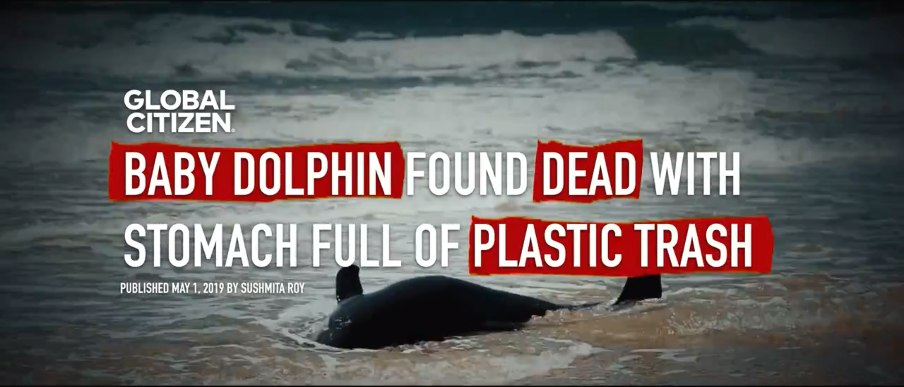
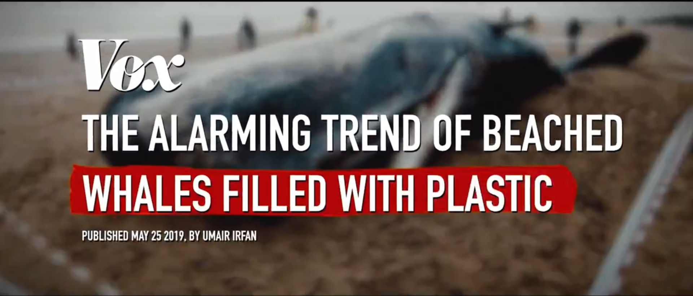
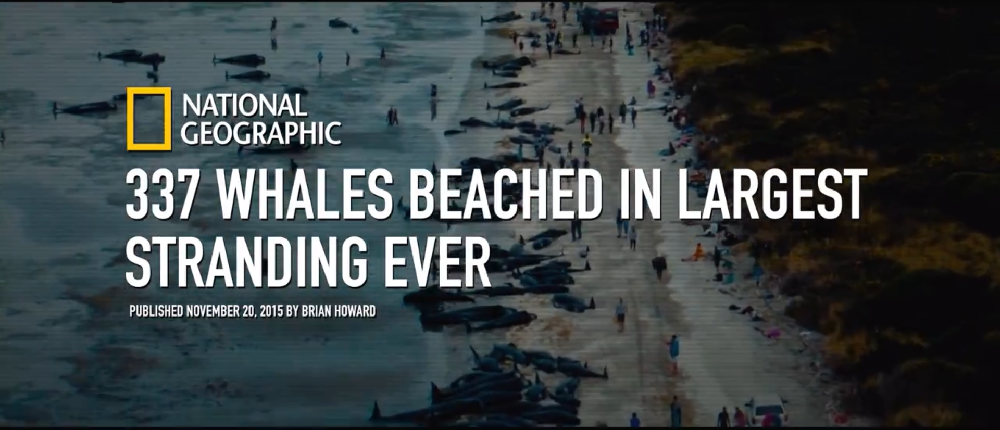
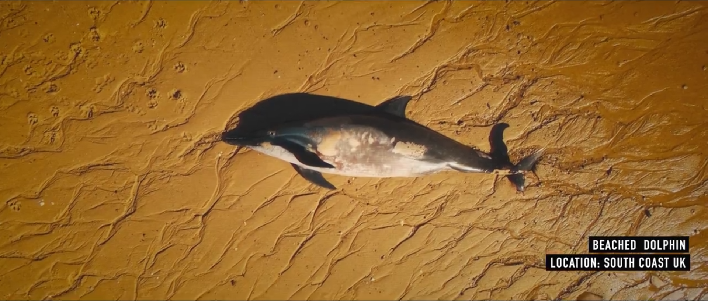
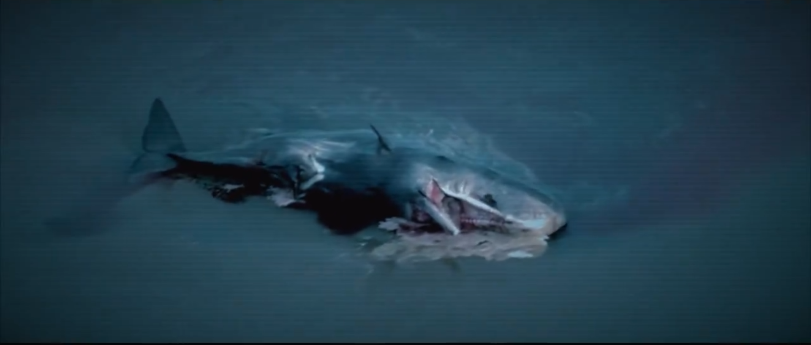

Seaspiracy merupakan film dokumenter yang menyelamai kehanjuran ekosistem laut yang disebabkan oleh industri perikanan global serta perannya dalam memicu polusi plastik.
Seaspiracy adalah karya para produser di balik film dokumenter Cowspiracy 2014 yang memenangkan sejumlah pengharagaan, Ali Tabrizi.
Ali mencerikan bahwa ia telah terpesona dengan lautan dan kehidupan didalamnya.
Berangkat dari kencitaannya tersebut,Ali membuat dokumneter yang menunjukan prilaku buruk manusia-manusia yang mencelakai spesies laut dan mengungkap korupsi global yang mengkhawatirkan.
Seaspiracy
Saat kapal ada ditengan lautan jika terjadi masalah, kami bisa dilempar ke laut.
Membuat film dokumenter ini sangatlah berbahaya. Ada banyak resikonya.
Jika taku mati, pulanglah.
Ali menceritakan sejak kecil, dia terpikat oleh lumba-lumba dan paus.Obsesinya pada lautan dikarenakan menonton film dokumenter dari orang-orang seperti Jacques Cousteau, David Atterborough, dan Sylvia Earle.
Menonton film meraka mentingkapkan dunia baru bagi Ali,yang dipenuhi keindahan yang melimpah,warna, dan kehidupan. Ali bermimpi kelak bisa menjelajahi lautan kita yang kaya seperti mereka. Mengambil gambar semua satwa liar yang menakjubkan yang hidup dibawah ombak. Setelah lulus kuliah, Ali mengerjakan film dokumenter lain, tetapi pada usia 22, siap membuat film sendiri tentang betapa menkjubkannya lautan.
Lautan adalah rumah bagi 80% kehidupan di bumi dengan sebagian besar lautan belum dijelajahi hingga kini, bagi saya, lautan adalah sumber inspirasi yang tidak bisa dirusak. Namun, tak lama setelah memulai proyek ini,visi indah saya selama ini akan lautan berubah total.

Paus yang Hamil Meninggal dengan 50 Punds Plastik diperutnya

Bayi Lumba-lumba ditemukan Meniggal dengan Perut penuh sampah plastik.

Tren yang mengkhawatirkan tentang paus terdampar yang dipenuhi dengan plastik

337 paus terdampar di terbesar yang pernah ada
Saat berita paus terdamapr mulai santer terdengan,

di sepanjang paintai tenggara Inggris tempat tinggal Ali, dia dipaksa menghadapi sisi kisah yang tak pernah dia tahu. Kisah tentang betapa besar dampak kita terhadap laut.

Terdamparnya hewan-hewan ini dengan perut penuh plastik sangatlah memprihatinkan bukan karena kecerdasan luar biasa mereka, tetapi karena mereka bahkan membantu menjaga kelangsungan hidup lautan.
Your browser does not support the audio element.